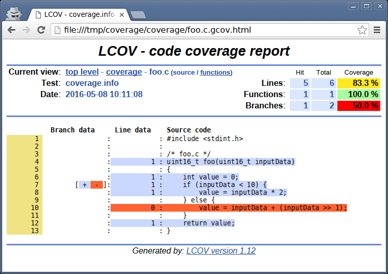

(April 2016)
Cover me!
I recently read an article about the lousy state of software quality... and it triggered me to start writing what I hope will become a series on techniques and methods to improve software quality, for both embedded and desktop machines: e.g. using coverage, static analysis, code generation, powerful static type systems (Ada/Rust), model-driven engineering, etc.
This first post is about coverage - and besides showcasing the basics, moves on to deeper challenges that arise when you need to work with embedded devices that have no filesystems - offering a solution that is portable across all GCC versions, for all embedded platforms that are supported by GCC.
Software quality
Today is a public holiday here in the Netherlands, so I spent a fair amount of my morning catching up on my favorite programming forums: Reddit/Programming and Hacker News.
In both forums,
"Have software developers given up?"
was on top of the list... Danny, the author of the piece, illustrates in
horrific-after-horrific screenshot the abysmal quality of software today...
What's even worse, is that this doesn't just apply to web applications (where in principle at least, the software can be updated without the users involvement). The market is now flooded with embedded devices, with software stacks that can only be described as barely functional - never meant to be updated, left in eternal limbo... The so-called "Internet of Things" is ushering in an era where quality - and hence, security! - of the software running our everyday lives will be subject to the whims of chance (and hackers armed with exploits).
What if you care about quality?
The market rewards "first to market" companies with orders of magnitude more money, so naturally project and product managers prioritize towards delivery speed.
But there's also a technical component to this "quality equation", whose main points I am hoping to address with a series of blog posts - this one being the first.
To begin with, there are many cases where "first to market" is NOT enough.
For example, code that will execute in a hospital, or a car, or a plane, or a satellite - or any other safety-critical apparatus that demands a certain level of quality. Usually this code is also meant to execute in an embedded environment; that is, not in the usual desktop/server Intel machines, but in low-powered micro-controllers or ARM platforms that control vital equipment.
How do you write that kind of code?
There are many opinions on the subject, and in this series we will attempt to illustrate the most important ones.
But for now, let's start with something that everyone agrees on: Coverage.
First step: Coverage on the host
I am a firm believer in "hands-on" - so we will begin with a simple C example [1], that we will compile with GCC on our host (Intel) machine, and perform coverage analysis on its execution. We will then move it to an embedded target and see whether that is an issue ; and if so, how we can cope.
/* foo.c */ #include <stdint.h> uint16_t foo(uint16_t inputData) { int value = 0; if (inputData < 10) { value = inputData * 2; } else { value = inputData + (inputData >> 1); } return value; }
We now ask GCC to instrument it for coverage analysis [2].
Notice how, in addition to the object file foo.o, a foo.gcno file is also generated:
$ gcc -c -g -O0 -fprofile-arcs -ftest-coverage foo.c $ ls -l foo.* -rw-r--r-- 1 ttsiod users 276 Apr 27 16:51 foo.c -rw-r--r-- 1 ttsiod users 3040 Apr 27 16:52 foo.o -rw-r--r-- 1 ttsiod users 388 Apr 27 16:52 foo.gcno
This file contains information that is used during coverage reporting - it's not so important at this point; focus your attention on the assembly code that GCC generated (boxed in ASCII-art below):
$ objdump -M intel -S foo.o Disassembly of section .text: 00000000 <foo>: ... if (inputData < 10) { 14: 66 83 7d ec 09 cmp WORD PTR [ebp-0x14],0x9 19: 77 0b ja 26 <foo+0x26> value = inputData * 2; 1b: 0f b7 45 ec movzx eax,WORD PTR [ebp-0x14] ; load input 1f: 01 c0 add eax,eax ; times 2 ! 21: 89 45 fc mov DWORD PTR [ebp-0x4],eax ; store result 24: eb 2f jmp 55 <foo+0x55> ; and update ex. counter } else { value = inputData + (inputData >> 1); 26: 0f b7 55 ec movzx edx,WORD PTR [ebp-0x14] ; load input 2a: 0f b7 45 ec movzx eax,WORD PTR [ebp-0x14] ; copy it 2e: 66 d1 e8 shr ax,1 ; shift it 31: 0f b7 c0 movzx eax,ax 34: 01 d0 add eax,edx ; add it, done! 36: 89 45 fc mov DWORD PTR [ebp-0x4],eax ; store result ; and update ex. counter .-------------------------- COVERAGE CODE KEEPING TRACK ---------------------------. | | | 39: a1 00 00 00 00 mov eax,ds:0x0 | | 3e: 8b 15 04 00 00 00 mov edx,DWORD PTR ds:0x4 ; increase 64bit edx:eax | | 44: 83 c0 01 add eax,0x1 ; coverage counter by 1 | | 47: 83 d2 00 adc edx,0x0 ; carry over to edx | | 4a: a3 00 00 00 00 mov ds:0x0,eax ; store 64 bits to ds:0 | | 4f: 89 15 04 00 00 00 mov DWORD PTR ds:0x4,edx ; and ds:4 | | | | } | | return value; | | | | 55: 8b 45 fc mov eax,DWORD PTR [ebp-0x4] | | 58: 89 c1 mov ecx,eax | | 5a: a1 08 00 00 00 mov eax,ds:0x8 | | 5f: 8b 15 0c 00 00 00 mov edx,DWORD PTR ds:0xc ; increase 64bit edx:eax | | 65: 83 c0 01 add eax,0x1 ; coverage counter by 1 | | 68: 83 d2 00 adc edx,0x0 ; carry over to edx | | 6b: a3 08 00 00 00 mov ds:0x8,eax ; store 64bits to ds:8 | | 70: 89 15 0c 00 00 00 mov DWORD PTR ds:0xc,edx ; and ds:0xc | \__________________________________________________________________________________/
Basically, depending on which branch of the if we end up executing, the code will keep track
of the number of executions in different 64bit counters (managed via the 64bit edx:eax pair
of registers). These counters are stored in ds:0 and ds:8 for our two branches.
Annotating the source via the execution counters
Running a small test, we can then annotate the code from the execution counters
logs - that are somehow (magically? keep reading) saved in .gcda files:
/* tst.c */ #include <stdint.h> extern uint16_t foo(uint16_t inputData); int main() { foo(5); return 0; }
$ # Compile testing code $ gcc -c -g -O0 -fprofile-arcs -ftest-coverage -Wall tst.c $ # Link testing code with our library function $ gcc -g -O0 -fprofile-arcs -ftest-coverage -o coverme tst.o foo.o $ # Run Forrest, run! $ ./coverme $ # The .gcda files contain the execution counters we saw above $ ls -l *.gcda -rw-r--r-- 1 ttsiod users 176 Apr 27 18:12 foo.gcda -rw-r--r-- 1 ttsiod users 176 Apr 27 18:12 tst.gcda
Finally, gcov can now annotate our code, and using both the .gcno
(compile-time generated) and .gcda (run-time generated) files,
report back that our tests only passed through one side of
our if: (notice the ##### below)
$ gcov -b foo.c File 'foo.c' Lines executed:83.33% of 6 Branches executed:100.00% of 2 Taken at least once:50.00% of 2 No calls Creating 'foo.c.gcov' $ cat foo.c.gcov -: 0:Source:foo.c -: 0:Graph:foo.gcno -: 0:Data:foo.gcda -: 0:Runs:1 -: 0:Programs:1 -: 1:#include <stdint.h> -: 2: -: 3:/* foo.c */ function foo called 1 returned 100% blocks executed 80% 1: 4:uint16_t foo(uint16_t inputData) -: 5:{ 1: 6: int value = 0; 1: 7: if (inputData < 10) { branch 0 taken 100% (fallthrough) branch 1 taken 0% 1: 8: value = inputData * 2; -: 9: } else { #####: 10: value = inputData + inputData >> 1; -: 11: } 1: 12: return value; -: 13:}
That's how you know that your tests are incomplete - you need to write
some more tests to exercise the missing branch (the one that was
taken 0% of the time).
You must now automate this kind of check - e.g. have your continuous integration
automatically grep your coverage reports to make sure there are no 'taken 0%'
in the output, and no '#####' either).
This will give you 100% statement and branch coverage.
Navigating the annotated files
You can also use lcov - to create much better looking, hyperlinked
and nicely colored outputs:
$ lcov --rc lcov_branch_coverage=1 --capture --directory . \ --output-file coverage.info $ genhtml --branch-coverage coverage.info --output-directory coverage
Top-level report in LCOV

Looking at foo.c report in LCOV
Seeing the parts of your code that have never been exercised is very easy with LCOV.
Embedded platforms and coverage
You may be wondering about how these .gcda files are generated.
If you work with non-embedded platforms, the best answer is probably
"by magic" ; this answer covers your needs, so go ahead with it -
laziness is a virtue. Write your tests, reach
100% statement and branch coverage, feel proud. Smile.
But what about those few, those happy few, that target embedded platforms?
Well, you will probably need to understand a bit more about the
mechanics behind .gcda files.
In embedded spaces, there's probably NO filesystem to speak of.
And whatever magic your platform's GCC is using to generate the .gcda information at the end of execution
(.fini sections, or __attribute__((destructor)) function pointers, etc),
the coverage counters won't be saved anywhere if there's no filesystem to speak of.
Somehow, the information that is used to create the .gcda files
must be communicated back to your host machine... Since that's where
your source files are - that's where the coverage annotation must take place.
And it's at this point that things may become much more difficult...
- Your embedded platform has its own communication interfaces. Whether it's a good old serial interface, or a serial-over-USB, or a JTAG connection, or whatever - you need to transfer the coverage data over it, back to the host.
- The coverage data are GCC-version-specific - and GCC documentation
specifically states that they don't care about portability of this
"counter" data ; each GCC version has its own
gcov-io.h/.cthat dictates how the information is structured in memory.
So how do you get this GCC-version-specific and platform-specific information back to your host machine over your embedded-system-specific communication channels, and then annotate your source files with execution coverage information?
GDB scripting to the rescue
If only there was an application-agnostic and platform-agnostic way to communicate with your embedded device at runtime... and then at the right point in the execution, stop the application and read (the coverage) information OUT of it!
Oh wait. Isn't that what a debugger is for?
Yes! Not only can you use your faithful platform-specific GDB to remote
debug (i.e. connect to the embedded target via it's tar extended-remote...
command), but you can also script it, so that at the right moment
(i.e. at the right breakpoint!) you can extract the information you need
back to the host, and dump it in host-local files.
The question is... what information should we get back to the host to
create our .gcda files?
GCDA files and the Linux kernel
Ideally, we'd want to transfer the actual content that would have been
saved in the .gcda files (if we did have a filesystem) back to the host.
And it turns out... that we find exactly that in the sources of the Linux kernel. The executive summary is that the kernel devs faced the same coverage problem. To address it, they coded a few files that provide a GCC-version-agnostic function doing exactly what we wanted:
size_t convert_to_gcda(char *buffer, struct gcov_info *info);
This function will generate the content of a .gcda file and store it
in the memory pointed to by buffer. It also follows a well-used pattern
in the Linux kernel, where if you call it first with buffer set to NULL, it returns
how many bytes you'll need to malloc to store the information.
The way this function works across all GCC versions, is that the types
it uses only contain the "parts that never changed" in the relevant
GCC structures. Think of it as knowing that e.g. the 3rd 32 bit value stored
in the main info coverage structure is a pointer to the .gcda filename.
So the only missing piece of the puzzle is that info variable - where do we
get hold of it?
Simple: When you compile your
application with the coverage options (i.e. -ftest-coverage -fprofile-arcs),
GCC's runtime, upon startup, calls a __gcov_init - for as many times as there are
.gcda files to be made - and in each call, the GCC runtime passes it
a struct gcov_info *.
All you have to do is provide your own __gcov_init that will store these
struct gcov_info pointers (at program startup), and then at the end,
your code will have to iterate over each one of them - calling
convert_to_gcda to generate the .gcda file information in memory.
Here's a link to a complete example that I am using for the embedded platforms I work with in the European Space Agency - i.e. our Leon2 and Leon3 targets. The key parts are shown below:
typedef struct tagGcovInfo { struct gcov_info *info; struct tagGcovInfo *next; } GcovInfo; GcovInfo *headGcov = NULL; /* * __gcov_init is called by gcc-generated constructor code for each object * file compiled with -fprofile-arcs. */ void __gcov_init(struct gcov_info *info) { printf( "__gcov_init called for %s!\n", gcov_info_filename(info)); fflush(stdout); GcovInfo *newHead = malloc(sizeof(GcovInfo)); if (!newHead) { puts("Out of memory!"); exit(1); } newHead->info = info; newHead->next = headGcov; headGcov = newHead; } void __gcov_exit() { GcovInfo *tmp = headGcov; while(tmp) { char *buffer; unsigned bytesNeeded = convert_to_gcda(NULL, tmp->info); buffer = malloc(bytesNeeded); if (!buffer) { puts("Out of memory!"); exit(1); } convert_to_gcda(buffer, tmp->info); printf("Emitting %6d bytes for %s\n", bytesNeeded, gcov_info_filename(tmp->info)); free(buffer); tmp = tmp->next; } }
The code in our custom __gcov_init (which is called automatically by GCC's runtime at
application startup) stores the received pointers in a simple linked
list. __gcov_exit then invokes the Linux-provided convert_to_gcda
to generate the coverage information.
To sum it up, we can use a very tiny part of Linux kernel code that
creates the .gcda file information in memory, on the embedded target;
without caring about platform or GCC-version specifics. Being Linux
kernel code it requires a bit of a 'cleanup' - e.g. change vmalloc,
kfree and kdup to C RTL functions (malloc, free, dup) - but that's
a small price to pay to get our .gcda content.
But we need that information back in the host, no?
Yes, indeed we do - and that's where GDB scripting comes in:
$ cat automate_coverage.gdb tar extended-remote .... # connect to the board load binary b base.c:79 # This breaks on the 'Emitting' printf above in __gcov_exit commands 1 # saving the coverage info back to the host in proper .gcda file silent set $filename = tmp->info->filename set $dataBegin = buffer set $dataEnd = buffer + bytesNeeded eval "dump binary memory %s 0x%lx 0x%lx", $filename, $dataBegin, $dataEnd echo dump binary memory $filename $dataBegin $dataEnd echo \n c end c $ MYPLATFORM-gdb -x automate_coverage.gdb
After connecting to our embedded target, and loading our binary, we set
a breakpoint right after calling convert_to_gcda - and invoke dump
to save the .gcda information in the properly named .gcda file
(the filename is accessible via the pointers given to us during __gcov_init).
That's it.
All the pieces are now in place, for on-target coverage analysis.
Can this be made faster?
In some platforms, the GDB connection may be slow (e.g. executing over serial connections).
But if your platform is supported by QEMU, you can then use the same approach just described to run your binaries under a simulated version of your platform - which will of course run a lot faster.
As an example, here's a piece of the Makefile target I am using for my work
with Leon3 boards at ESA: my make coverage rule:
coverage-common: $(MAKE) clean $(MAKE) CFG=debug LEON=leon3 COVERAGE=1 FPU=1 # Spawning QEMU with our coverage enabled binary qemu-system-sparc -nographic -M leon3_generic -m 64M -kernel \ bin.debug.FPU.leon3.WITH_COVERAGE/fputest -gdb tcp::9976 -S & # Spawning GDB and running the coverage script sleep 2 ; sparc-rtems4.11-gdb -x contrib/coverage.gdb </dev/null coverage: coverage-common # Reporting the results mkdir -p coverage ; \ cd coverage ; \ ln -s ../src ; \ sparc-rtems4.11-gcov ../objs.debug.FPU.leon3.WITH_COV*/*gcda @echo @echo ================================================== @echo The coverage-annotated sources are under coverage/ @echo ==================================================
As you can see, I spawn a custom-compiled QEMU that simulates my target
platform (the Leon3 used in many ESA missions) and then start it in GDB
server mode (-gdb tcp::9976). I can then connect to it over port 9976 from
my GDB's tar extended-remote ... (see GDB script in previous section) -
that is, just as I do with the real boards. And then run my tests
completely automatically, on the host alone - no need for a board.
In plain words - continuous integration becomes as simple as doing make coverage
from your Hudson/Jenkins/WhateverCI server.
No need for real boards then?
That would be too much :-)
You must always test on the embedded target as well - after all, QEMU may fail to emulate properly some important piece of your board.
The good thing with the approach as I described it in the sections above, is that it works on both simulated and real targets at no extra cost. You can setup your continuous integration to execute the tests upon commit under QEMU, but also on a real board every week/month/etc - whatever your hardware's speed allows.
Just make sure to always check with a real board - especially before the final reviews :-)
Summary
It was a long post - if you made it this far, congratulations! I believe that you now know a lot more about coverage than most IoT makers out there (just kidding - I think ;-)
I am pretty sure that most of the code out there today isn't even close to 100% statement coverage (that is, even if we ignore branch coverage).
Maybe this post will inspire some of you to start moving towards that goal.
And of course there's a whole world after coverage ; including static analysis, and model-driven code generation, and much better type systems than those of poor C (that is: Ada, Rust, etc).
But we'll tackle these in future posts :-)
Notes
The same forms you see here applied for C, exist in pretty much all languages. Study the coverage support in the language you use, and you'll see the same pattern ; basically execution traces are logged and then used to annotate the code.
We invoke GCC with
-O0to disable optimizations; you really don't want to do coverage analysis with optimizations enabled, since the results may very well be messed up - think about inlining and you'll understand.


| Back to index My CV | Last update on: Sat Feb 5 12:13:09 2022 |
The comments on this website require the use of JavaScript. Perhaps your browser isn't JavaScript capable or the script is not being run for another reason. If you're interested in reading the comments or leaving a comment behind please try again with a different browser or from a different connection.